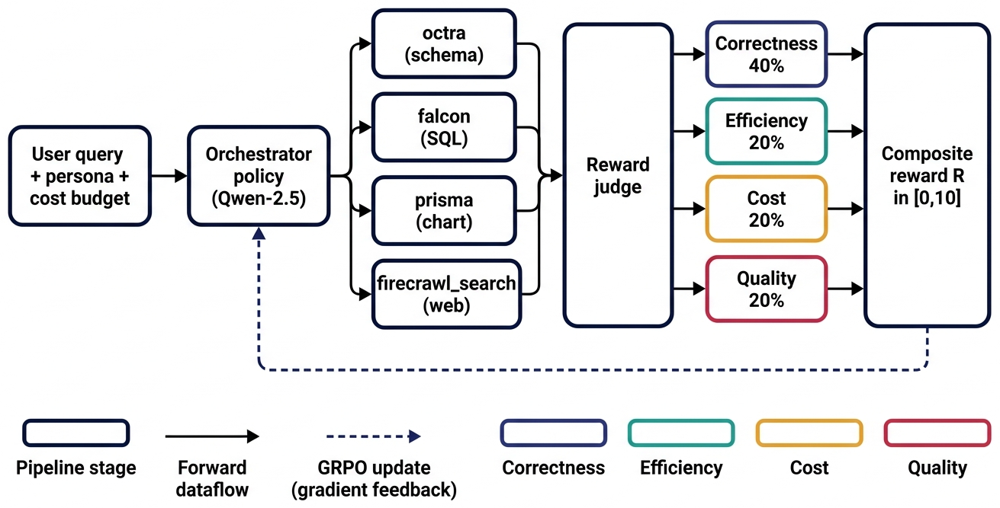
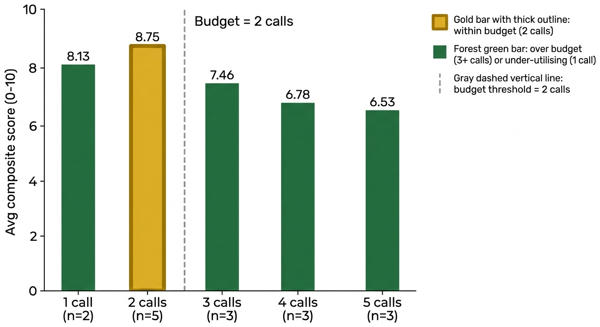
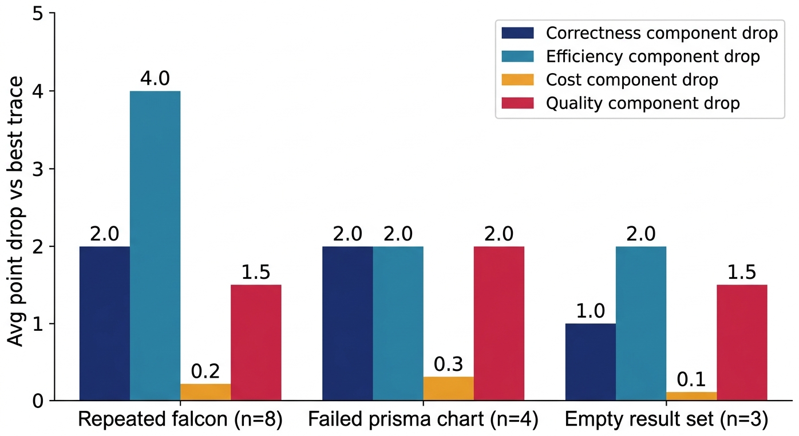

A four-component composite reward function for tool-using LLM orchestrators, characterised on a 16-trace evaluation log.
Mean composite reward 7.64/10 across 16 traces. Reward is monotone in tool-call count: 8.75/10 at the two-call budget, declining to 6.53/10 at five calls. Three named failure modes leave distinct fingerprints across correctness, efficiency, cost, and quality, giving a downstream RL learner the diagnostic signal it needs.
01Abstract
Enterprise LLM agents are increasingly asked to act, not just answer, and a single user query may chain through several tools whose dollar cost, latency, and answer quality must be traded off jointly. Most current orchestrators are prompt-engineered ReAct loops, leaving practitioners with no principled signal to train against. We define a four-component composite reward function for tool-using LLM orchestrators that combines an LLM-judged correctness signal against a reference tool sequence (weight 0.40), a closed-form efficiency penalty against a per-trace tool-call budget (0.20), a closed-form dollar-cost penalty against a spend cap (0.20), and an LLM-judged answer-quality signal (0.20), each on a 0 to 10 scale.
We characterise the reward function on a 16-trace held-out evaluation log of an enterprise sales-analytics workflow over four production tools (octra, falcon, prisma, firecrawl_search). The reward attains a mean composite score of 7.64/10 (range 6.50 to 8.86), is monotone in tool-call count (8.75/10 at the two-call budget, dropping to 6.53/10 at five calls), and isolates three recurring orchestrator failure modes (repeated SQL, failed chart generation, empty result sets) into distinct per-component fingerprints. All judge calls are content-addressed and cached in SQLite, making the reward signal reproducible bit-for-bit and turn-key as a reward_funcs argument for GRPO training of a Qwen2.5 orchestrator policy.
02Contributions
Composite reward function
Four bounded sub-rewards (correctness, efficiency, cost, quality) on a 0–10 scale combined under a fixed 0.40 / 0.20 / 0.20 / 0.20 convex weighting.
16-trace characterisation
Per-trace and per-component decompositions over a held-out enterprise sales-analytics log, releasing both the aggregate scores and the underlying judge rationales.
Diagnostic fingerprints
Three orchestrator failure modes (repeated falcon, failed prisma chart, empty result sets) leave distinct fingerprints across the four components — the property a downstream RL learner needs.
03How it works
The orchestrator policy emits a tool-call sequence over four production tools and a free-form natural-language answer. Each trajectory is scored along four reward components: correctness (an LLM judge compares the actual tool sequence against an expert-defined reference set), efficiency (a closed-form penalty against a per-trace tool-call budget of two), cost (a closed-form penalty against a $0.05 spend cap), and quality (a second LLM judge scores the final natural-language answer for formatting, completeness, and clarity).
The four components are combined under the convex weighting R = 0.40 · correctness + 0.20 · efficiency + 0.20 · (1 − cost) + 0.20 · quality, with each term bounded to [0, 10] so that R itself lives on the same 0–10 scale as any single component. Every LLM-judge verdict is keyed by the SHA-256 of the (query, output, component, expected-tools) tuple and cached in SQLite, so identical re-evaluations are free and long GRPO runs amortise judge cost over thousands of repeated query prefixes.

04What we found
The reward is monotone in tool-call count: traces respecting the two-call budget score 8.75/10 on average, declining to 7.46 at three calls, 6.78 at four, and 6.53 at five. The five-call traces specifically lose six efficiency points (efficiency score 4.0/10) because the closed-form efficiency penalty clamps at the budget. Realised cost stays in a tight band of $0.0076 to $0.0118 against the $0.05 budget, so the vertical spread in composite score is driven by tool-call structure, not dollar spend.


05Context and limitations
These results characterise the reward function as a measurement instrument, not yet a trained policy. The 16-trace evaluation is small, comes from a single conversation-sample.json log, and was produced by an untrained 0.5B-parameter Qwen2.5 orchestrator. Cost is reported in simulator-USD against a fixed $0.05 cap, not measured wall-clock token spend. Two of the four components rely on a generative judge that inherits its own biases; the SQLite cache makes verdicts content-addressed and reproducible but inter-judge agreement is not yet quantified. Next steps include scaling to a 500-query suite, reporting inter-judge agreement between Mock, OpenAI, and Anthropic judges (almost free given the cache), and closing the loop with a Qwen2.5-7B GRPO training run.
06Where to go next
07Cite
@misc{parmar2026compositereward,
title = {Composite Multi-Component Reward Functions for Tool-Using LLM Orchestrators: A 16-Trace Characterisation},
author = {Parmar, Rushit},
year = {2026},
url = {https://github.com/Vizuara-AI-Lab/paper-composite-reward-tool-using-llm-orchestrators}
}